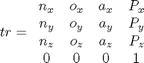
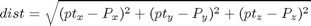

dist_pt2tr
Description: Function for find the distance from a point to a transform
Contents
Function Call
- Inputs: pt (3*1 double) x,y,z cartesian point tr (4*4 double) transform of an arm
- Returns: dist (double) distance from pt to tr
function dist=dist_pt2tr(pt,tr)
Given an end effector transform

Calculate distance (dist) from pt to tr

dist=sqrt((pt(1)-tr(1,4))^2+... (pt(2)-tr(2,4))^2+... (pt(3)-tr(3,4))^2);